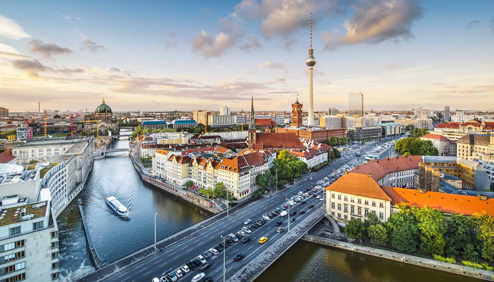
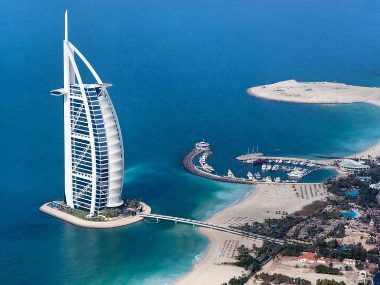
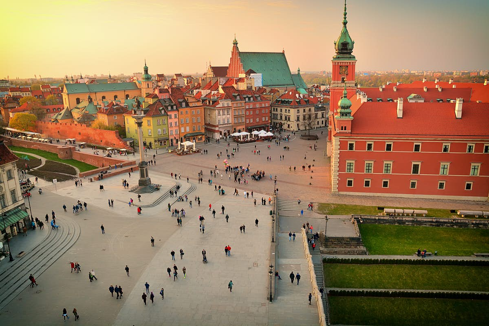

Guides

Berlin Guide
This is a guide from Berlin.Please fill out the form below for more information.
Time in berlib

Dubai Guide
This is a guide from Dubai.Please fill out the form below for more information.
Time in dubai

Warszaw Guide
This is a guide from Warszaw.Please fill out the form below for more information.
Time in Warszaw
London Guide
This is a guide from London.Please fill out the form below for more information.
Time in london